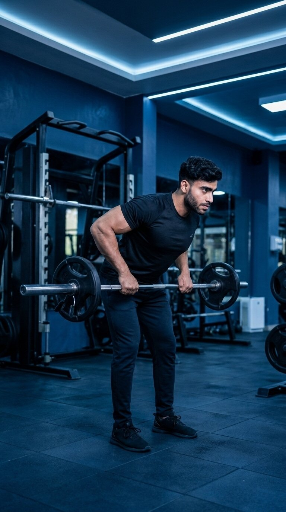

Primary Muscle
Latissimus Dorsi
Build Back Thickness, Increase Pulling Strength & Master Powerful Horizontal Rowing Technique
The Barbell Bent-Over Row is a compound free-weight exercise that primarily targets the latissimus dorsi, rhomboids, and trapezius while also engaging the rear deltoids, biceps, forearms, and spinal erectors. Through a controlled horizontal pulling motion performed from a stable hip-hinged position, it helps develop back thickness, upper-body pulling strength, muscular coordination, and total posterior-chain stability.

Latissimus Dorsi
Barbell
Intermediate
Compound
Understand which muscles do most of the work during the Barbell Bent-Over Row and which supporting muscles help pull, stabilize, and control the movement throughout each repetition.
Lats
Middle Back
Upper and Middle Back
Front of Upper Arm
Discover how the Barbell Bent-Over Row helps develop back thickness, increase upper-body pulling strength, strengthen multiple posterior-chain muscles, and build greater control and stability through a powerful free-weight rowing movement.
Trains the latissimus dorsi, rhomboids, and trapezius through a powerful horizontal pulling motion, helping develop muscular strength and thickness across the middle and upper back.
Strengthens the muscles responsible for pulling heavy resistance toward the torso, helping improve horizontal pulling ability and supporting stronger performance across other rowing and compound pulling exercises.
As a compound free-weight exercise, the Barbell Bent-Over Row recruits the lats, rhomboids, trapezius, rear shoulders, biceps, forearms, and spinal erectors through one coordinated rowing movement.
Holding a stable bent-over position requires continuous engagement from the spinal erectors, core, glutes, and hamstrings, helping strengthen the muscles responsible for maintaining a powerful hip-hinged posture.
Maintaining a controlled hip hinge while rowing the barbell challenges the core and surrounding stabilizers, helping develop greater body control and stability throughout loaded compound movements.
Barbell loading can be increased gradually as your strength and technique improve, providing a measurable progression path for continued back development, stronger pulling performance, and greater total-body strength.
Follow these step-by-step instructions to perform the Barbell Bent-Over Row with proper setup, controlled technique, a stable hip-hinged position, and effective back engagement.
Load the barbell with an appropriate amount of weight and stand with your feet approximately shoulder-width apart. Position the barbell in front of your legs and prepare to lift it with a secure, balanced stance.
Begin with a manageable weight that allows you to maintain a stable torso, neutral spine, and controlled rowing motion throughout every repetition.
Grip the barbell with both hands using an overhand grip slightly wider than shoulder-width apart. Keep your wrists in a neutral position and hold the bar securely without excessive tension in your hands or forearms.
A comfortable grip slightly wider than shoulder-width works well for most lifters. Avoid gripping unnecessarily wide, as this may reduce your effective range of motion.
Push your hips backward and hinge forward while keeping your knees slightly bent, core braced, and spine neutral. Allow the barbell to hang beneath your shoulders with your arms fully extended before beginning the row.
Keep your torso stable and avoid rounding your lower back. Maintain a strong hip hinge that you can hold consistently throughout the entire set.
Drive your elbows backward as you pull the barbell toward your lower ribs or upper abdomen. Keep the bar close to your body and maintain a stable torso while allowing your shoulder blades to retract naturally through the rowing motion.
Think about driving your elbows behind you rather than simply lifting the bar with your arms. Avoid jerking the weight or using excessive torso movement to create momentum.
Slowly extend your arms and lower the barbell back to the starting position while maintaining your hip hinge, neutral spine, and stable torso. Allow your shoulder blades to move naturally as your back muscles reach a comfortable stretched position.
Do not let the barbell drop rapidly or lose your torso position between repetitions. Control the lowering phase completely before beginning the next pull.
Avoid these common technique errors to improve back engagement, maintain a stronger hip-hinged position, and perform the Barbell Bent-Over Row more effectively.
Loading the barbell too heavily can make it difficult to maintain a stable torso, control the bar path, and use a consistent rowing motion throughout each repetition.
Choose a manageable weight that allows you to maintain a strong hip hinge, neutral spine, and controlled bar path through both the pulling and lowering phases.
Allowing your torso to become too upright can change the rowing angle and shift more emphasis away from the intended middle-back muscles, especially when excessive weight causes your body position to rise during the set.
Push your hips backward, keep your knees slightly bent, and establish a strong hip-hinged position that remains consistent throughout every repetition.
Allowing the lower back to round excessively can reduce torso stability and make it harder to maintain a strong, controlled hip-hinged position throughout the rowing movement.
Brace your core, maintain a comfortable neutral spine, and keep your torso stable throughout both the pulling and lowering phases of every repetition.
Jerking the barbell upward, bouncing through the knees, or repeatedly swinging the torso can reduce movement control and make it harder to maintain consistent tension on the intended back muscles.
Brace your core, hold a stable hip-hinged position, and perform each repetition with a smooth pull and controlled lowering phase without excessive swinging, bouncing, or jerking.
Apply these practical coaching cues to improve your Barbell Bent-Over Row technique, increase back engagement, maintain a stronger hip-hinged position, and perform each repetition with greater control and consistency.
Focus on driving your elbows backward as you row the barbell toward your torso rather than simply pulling the weight upward with your hands and arms.
Think about bringing your elbows behind your body while keeping the bar close to your torso. This cue can help you focus on the back muscles throughout the pulling phase.
Push your hips backward, keep your knees slightly bent, brace your core, and maintain a stable torso angle throughout each repetition instead of rising upright as you pull the barbell.
Your torso position should remain consistent while your arms and shoulder blades perform the rowing motion. Avoid repeatedly standing up or swinging backward to move the weight.
Lower the barbell gradually as your arms extend, maintaining control of the weight while allowing your shoulder blades to move naturally and your back muscles to reach a comfortable stretched position.
Do not let the barbell drop rapidly toward the floor. Keep the lowering phase smooth and controlled while maintaining your neutral spine and stable hip-hinged position.
Increase the barbell load only when you can maintain a stable torso, neutral spine, controlled bar path, comfortable range of motion, and smooth repetitions from start to finish.
Heavier weight should not require excessive torso swinging, shortened repetitions, bouncing through the knees, or jerking the barbell upward. Progress gradually while keeping every repetition controlled and consistent.
Progress from learning the Barbell Bent-Over Row with a manageable load to stronger, more challenging variations while maintaining a stable hip hinge, neutral spine, controlled bar path, effective back engagement, and consistent technique.
Start with a weight that allows you to learn proper stance, grip position, hip-hinge mechanics, torso alignment, bar path, and controlled horizontal rowing technique without relying on excessive momentum.
Balanced foot positioning, comfortable grip, strong hip hinge, neutral spine, controlled bar path, full comfortable range of motion, and smooth repetitions.
Develop consistent repetitions by maintaining your hip-hinged position, driving your elbows backward, rowing the barbell toward your lower ribs or upper abdomen, and controlling the lowering phase until your arms return to a comfortable extended position.
Stable torso angle, effective elbow path, controlled pulling phase, smooth lowering phase, comfortable stretch, and repetitions without excessive swinging, bouncing, or jerking.
Once you can perform consistent Barbell Bent-Over Row repetitions with reliable technique, gradually increase the load while preserving your hip hinge, neutral spine, controlled bar path, range of motion, and overall movement quality.
Progressive load increases, consistent technique, controlled tempo, strong back engagement, full comfortable range of motion, and maintaining your torso position as fatigue develops.
After mastering the standard Barbell Bent-Over Row, explore suitable grip widths, controlled tempo variations, paused repetitions, and other appropriate rowing variations to introduce new challenges according to your training goals and experience.
Intentional exercise variation, appropriate load selection, controlled technique, consistent range of motion, stable hip-hinged positioning, and choosing variations that match your individual goals and experience.
Find clear answers to common questions about Barbell Bent-Over Row technique, muscles worked, grip position, bar path, torso positioning, training volume, and exercise progression.
The Barbell Bent-Over Row primarily targets the latissimus dorsi, rhomboids, and trapezius. The rear deltoids, biceps brachii, forearms, and teres major assist the pulling movement, while the spinal erectors, core, glutes, and hamstrings help stabilize the body in the hip-hinged position.
A pronated, or overhand, grip slightly wider than shoulder-width is commonly used for the standard Barbell Bent-Over Row. Your grip should feel secure and allow a comfortable elbow path and range of motion. Different grip widths and hand positions may be used depending on individual comfort, experience, anatomy, and training goals.
For a standard Barbell Bent-Over Row, pull the barbell toward your lower ribs or upper abdominal area while driving your elbows backward through a controlled path. The exact finishing position may vary slightly depending on your grip width, torso angle, individual anatomy, and intended rowing technique.
Hinge forward from your hips while maintaining a neutral spine and slightly bent knees. Your exact torso angle may vary depending on mobility, anatomy, rowing style, and training goals, but you should establish a strong position that allows you to row the barbell with control without excessive lower-back rounding or repeated torso swinging.
The Barbell Bent-Over Row can be suitable for beginners who have learned basic hip-hinge mechanics and can maintain a stable torso and neutral spine under load. Beginners should start with a light, manageable weight and focus on proper stance, grip, body positioning, controlled bar path, and smooth repetitions before gradually increasing the load.
The appropriate number of sets and repetitions depends on your training experience, goals, recovery, and overall program. For general muscle development, a common starting point is approximately 2–4 working sets of 6–12 controlled repetitions using a load that allows you to maintain a strong hip hinge, neutral spine, controlled bar path, comfortable range of motion, and consistent technique throughout each set.
Explore other back exercises that complement the Barbell Bent-Over Row and help you develop horizontal pulling strength, back thickness, upper-back control, and balanced muscular development through different movement patterns and resistance methods.


Continue building your back strength and training knowledge with step-by-step exercise guides covering proper technique, muscles worked, common mistakes, coaching tips, and progression strategies.